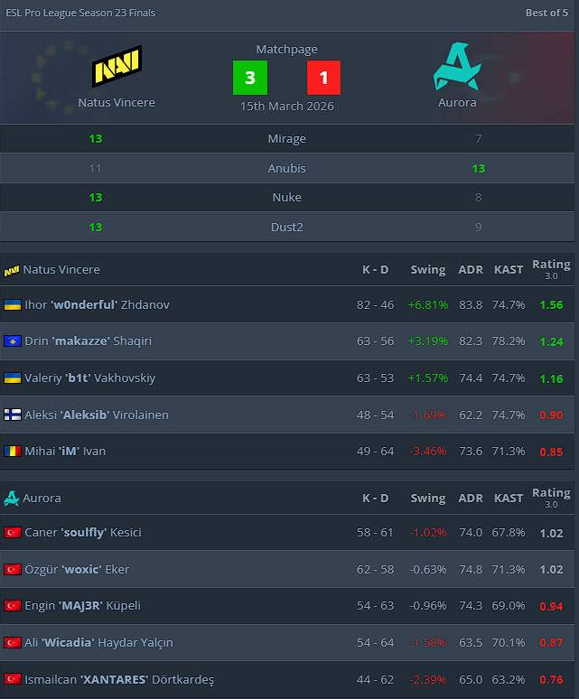

The Ukrainian sniper dominated to lead his team to their first tier-one trophy since IEM Rio 2024.
Natus Vincere are the champions of ESL Pro League Season 23 Finals after beating Aurora 3-1 in the tournament's grand final in Sweden.
It is the second LAN trophy for the team since bringing in Drin "makazze" Shaqiri in June 2025, and their first tier-one tournament win since IEM Rio 2024, 518 days prior.
"No Vitality, easy win," Valeriy "b1t" Vakhovskiy said in a quick tongue-in-cheek comment on stage immediately after the win.
makazze had been at the forefront of his team's charge in the online stage and in their quarter-final matchup, but it is Ihor "w0nderful" Zhdanov who deserves his flowers for taking over in the all-deciding series.
The Ukrainian sniper stepped up amidst criticism and scrutiny, finding the kind of form that had been so key in Natus Vincere's run to the semis of the StarLadder Budapest Major last year. He ended the series with a 1.56 rating, won seven clutches, and topped the scoreboard for NAVI in all four maps, with a three-way tie at 18 frags on the Dust2 decider.
The tone was set early on Mirage, where Aurora's pistol and conversion went immediately to waste after w0nderful hit a blistering Deagle headshot on an AWPing Özgür "woxic" Eker, picked up the sniper, and added three more kills to convert an eco round for Natus Vincere.
The pressure didn't let up from there, and Aurora had misery piled upon them as b1t and w0nderful added 1v2 and 1v3 clutch wins to lead their side to a 9-3 lead. Aurora gave themselves a lifeline with another pistol win, but it served only to make the scoreline look marginally more respectable before Natus Vincere sealed victory, 13-7.
Aurora's specialist map of Anubis was next, but it had been anything but against Natus Vincere since the Ukrainian organization went international in 2023. Since the teams faced on it for the first time at ESL Pro League Season 18, Engin "MAJ3R" Küpeli's side had faltered in all five of their meetings.
That looked to be turning around as the map kicked off, with Mihai "iM" Ivan and makazze going 0-6 to start and Aurora romping to a flawless lead. The Kosovar finally got on the board with a triple, but a 1v2 by Ali "Wicadia" Haydar Yalçın continued Aurora's strong stretch as they led 8-4 at the break.
Natus Vincere replied in kind on the offense, finding their footing by utilizing Middle and denying Aurora's few attempts at aggression elsewhere to begin a comeback. The Turks stole one round away early with an unorthodox unarmored MP9 stack in Middle and another off a 1v3 clutch by Wicadia, but continued excellence by w0nderful, including a 1v3 clutch of his own, put NAVI in the lead, 11-10.
The Ukrainian sniper was called upon again to save his team in a 1v4 ace clutch attempt, but even in form, he couldn't deny Aurora map point and they converted upon that the round after to even the series.
Clutches continued to make a difference on Nuke, with Caner "soulfly" Kesici winning one early to respond to Natus Vincere's streak of three from the first gun round. The Turks had a good handle on their defenses from there, going up 7-4, but yet another 1v2 clutch by w0nderful, his fifth of the series, kept NAVI within two at the break.
w0nderful's superb final continued in the second half, and he, combined with Aleksi "Aleksib" Virolainen, established a near-flawless defense. A 1v3 clutch by Wicadia led to Aurora's sole round after the swap, and NAVI's Ukrainian sniper topped the board again as his team romped to a 13-8 close.
It seemed like w0nderful simply couldn't put a foot wrong as he began Dust2 with a perfectly timed flank to tap down two players, and NAVI soon stretched their lead to 8-4 at the break after a 1v2 from b1t and a masterclass 1v4 by makazze.
Aurora had a last-gasp effort to pull off a comeback, but fittingly, it was a 1v1 clutch by w0nderful that eventually set his team on match point, and a 1v2 clutch, his seventh of the series, that clinched the trophy.
